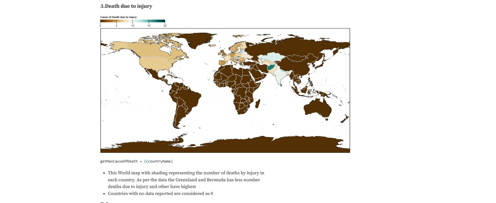

My Work
Recent Work

CineMatch

Employee Tracking System

Geospatial Analysis
BRFF Database
About Me
I’m a Master’s student in Applied Data Science at Indiana University with over 3 years of experience in software engineering and data analytics. I’ve worked at Tata Consultancy Services and Optum, building tools to streamline operations and uncover insights through data.